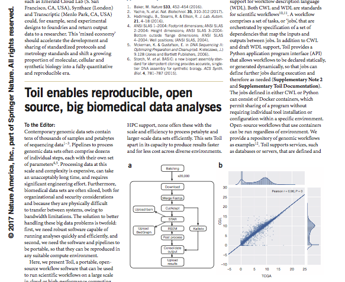
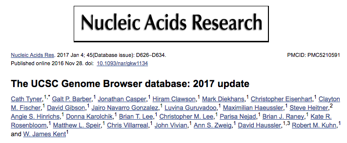
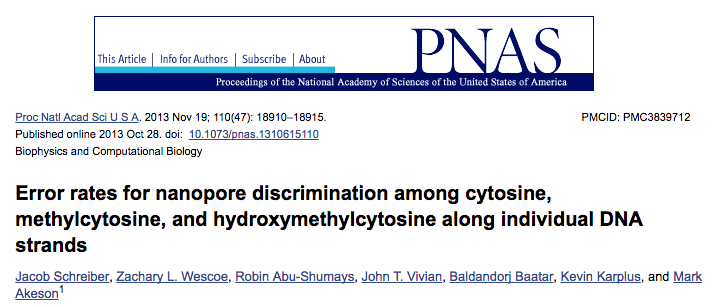

I am a third-year bioinformatics Ph.D. student at UC Santa Cruz working in the Computational Genomics Lab at the Genomics Institute. I spent the first two years helping develop Toil, an open-source distributed workflow system designed for massive scalability, and writing genomic workflows that use Toil. This work enabled a large-scale compute of gene- and isoform-level expression values from 20,000 RNA-seq samples across several important datasets, which you can read about here.
My current PhD research is focused on analyzing the expression differences between a variety of cancers at the tissue level. I believe in open-source software and science and actively post all my work on Github.
|  |
Vivian J, Rao AA, Nothaft FA, Ketchum C, Armstrong J, Novak A, Pfeil J,
Narkizian J,
Deran AD, Musselman-Brown A, et al. Toil enables reproducible, open source, big
biomedical data analyses. Nat Biotechnol. 2017 Apr 11;35(4):314-316. doi:
10.1038/nbt.3772. PubMed PMID: 28398314.
|
|  |
Tyner C, Barber GP, Casper J, Clawson H, Diekhans M, Eisenhart C, Fischer CM, Gibson D,
Gonzalez JN, Guruvadoo L, et al. The UCSC Genome Browser database: 2017 update. Nucleic
Acids Res. 2017 Jan 4;45(D1):D626-D634. doi: 10.1093/nar/gkw1134. Epub 2016 Nov 29.
PubMed PMID: 27899642; PubMed Central PMCID: PMC5210591
|
|  |
Schreiber J, Wescoe ZL, Abu-Shumays R, Vivian JT, Baatar B, Karplus K,
Akeson M. Error
rates for nanopore discrimination among cytosine, methylcytosine, and
hydroxymethylcytosine along individual DNA strands. Proc Natl Acad Sci U S A. 2013 Nov
19;110(47):18910-5. doi: 10.1073/pnas.1310615110. Epub 2013 Oct 28. PubMed PMID:
24167260; PubMed Central PMCID: PMC3839712.
|
| Pairwise DESeq2 Partition Method and Concordance |
| Massively Scalable RNA-seq Expression Workflow |
| Directed Acyclic Graph Conversion to Tree with Two Edge Types |